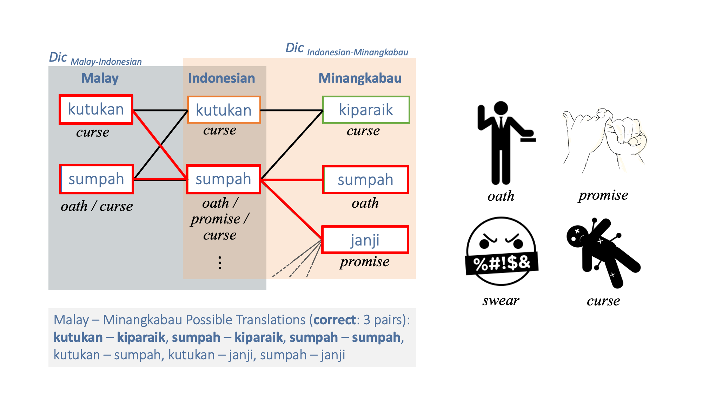
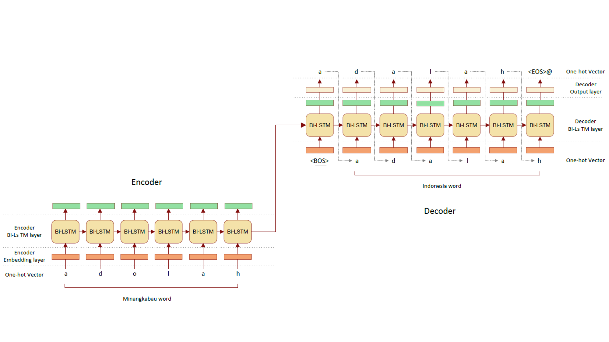
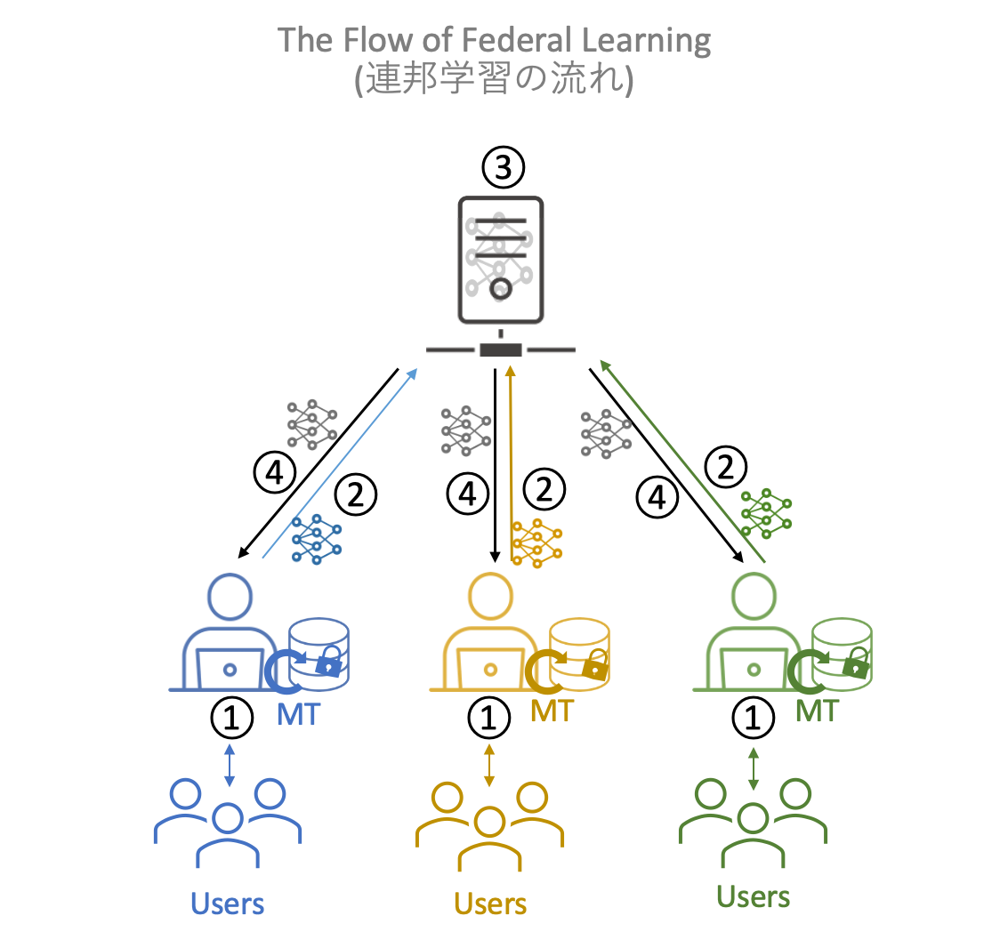

当研究室では、ニューラルネットワークや他の人工知能の技術、人を組み合わせることで、低資源言語の言語資源の開発を行っています。 特に、インドネシアの700以上の言語を対象に対訳辞書を作成するインドネシア言語スフィアのプロジェクトを推進中です。

インドネシアの多くの言語は、オーストロネシア語族に属しており、同じ祖語を持つ非常に類似した言語です。 この言語間の新しい対訳辞書（たとえば、マレー語とミナンカバウ語）を作成するために、 二つの対訳辞書（マレー語とインドネシア語の対訳辞書とミナンカバウ語とインドネシア語の対訳辞書）に共通のピボット言語（インドネシア語）で， 各辞書の対訳ペアを繋いだネットワークを生成し、両端の単語ペア（kutukan（マレー語）とkiparaik（ミナンカバウ語））を対訳ペアとして抽出します。 しかし、ピボット言語の単語が多義語の場合（sumpah（インドネシア語）は宣誓、約束、呪いといった意味を持つ）、 意味の異なる単語ペア（kutukan（マレー語）とjanji（ミナンカバウ語））が抽出される可能性がある。 そこで、対称なトポロジーの単語ペアのみを抽出することで精度を向上させます。
[Arbi H. Nasution, Yohei Murakami Toru Ishida. A Generalized Constraint Approach to Bilingual Dictionary Induction for Low-Resource Language Families, ACM Transactions on Asian and Low-Resource Language Information Processing, Vol. 17, No. 2, pp. 9:1-29, 2018.,
Arbi H. Nasution, Yohei Murakami Toru Ishida. Plan Optimization to Bilingual Dictionary Induction for Low-Resource Language Families, ACM Transactions on Asian and Low-Resource Language Information Processing, Vol. 20, No. 2, pp. 29:1-28, 2020.]

オーストロネシア語族に属しているインドネシアの多くの言語は、非常に類似しています。 これらの非常に類似した言語は、同じ祖語の単語から派生した同根語と呼ばれる単語を持ちます。 同根語は各言語の発音の発達に伴い、同じ単語から言語ごとに派生していくため、 同根語の発音は言語間で規則的な変化（単語の最後のoがaに変わるなど）が見られる場合があります。 この規則的な変化をニューラルネットワークで学習し、一方の言語の単語にこの規則を適用することで、訳語を生成することを目指します。 また、獲得された規則の類似性から言語間の派生関係などの仮説を生成し、比較言語学へ寄与することも目指します。

高精度のニューラル機械翻訳を構築するには、大規模な高品質の対訳データが必要となります。 しかし、このような対訳データの構築には多大なコストが生じるため、一組織では構築が困難です。 また、異なる組織が作成した対訳データを収集するにも、著作権の問題があり、集約がなかなか進みません。 そこで、対訳データを一カ所に集約して学習するのではなく、各データ所有者の下で対訳データを学習してモデルを生成し、 そのモデルを連邦制で連携させる連邦学習を用いることで、非中央集権型のニューラル機械翻訳の構築を目指します。
発表情報: 北川勘太朗, 張禹王, 村上陽平. マルチエージェント強化学習を用いたニューラル機械翻訳の連携, 情報処理通信学会総合大会, 2024
英語がリンガフランカとなったことで、現在，英語は一つでなく、 非母語話者ごとの英語が存在し、社会はその多様性を許容しています。 一方で、ニューラル機械翻訳は大規模な対訳データを用いて一つのモデルを学習し、 機械翻訳は一つの英語しか生成しません。 学習データが英語母語話者の英語に偏っていた場合、現在の多様な英語が失われ、 英語母語話者の英語のみになっていく可能性があります。 その結果、英語非母語話者とは異なる視点で表現された英語が相手に伝わっていくことになります。 この研究ではこれを機械翻訳のバイアスと呼びます。 今後、機械翻訳の利用が進み、機械翻訳の生成した翻訳文を基にした英語が社会に溢れていくことで、この傾向が加速することが予想されます。 そこで、本研究では、英語非母語話者の書いた英語と、機械翻訳で生成した英語を比較分析することで、 このような機械翻訳のバイアスが存在しているのかどうか、存在していればどのようなバイアスなのかを明らかにすることを目指します。